để xem chi tiết tình trạng cấp phép, như hình dưới,
để xem chi tiết tình trạng cấp phép, như hình dưới,| Nhà sản xuất | Sản phẩm tương thích | USB tạm thời (giới hạn thời gian) | USB vĩnh viễn (sản phẩm) | Tên trình điều khiển |
|---|---|---|---|---|
| Sense | Chỉ hỗ trợ phiên bản VISIONAssembly 6.3.200 trở lên | 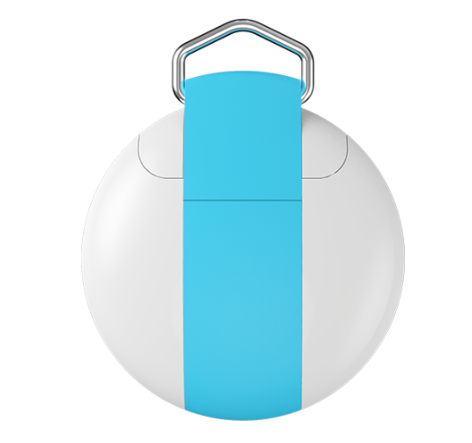 |
sense_shield_installer_pub_XXXX.exe |
Danh sách số hiệu và quyền hạn của USB bảo mật
| Số hiệu | Tên quyền hạn |
|---|---|
| 1-7 | Chức năng cơ bản bao gồm tìm kiếm, định vị, phát hiện, đo lường 2D, hiệu chuẩn, đọc mã, v.v. |
| 17-18 | Chức năng 3D |
| 19 | Học sâu (Deep Learning) |
| 20 | OCR |
| 100 | Quyền truy cập sản phẩm VisionAssembly |
| 101 | Quyền truy cập sản phẩm VisionLASER |
| 188 | Cấp phép liên kết mã hóa dự án và công trình |
Bước 1: Vào thư mục cài đặt VA, nhấp đúp để mở “加密狗查看工具.exe” (Công cụ kiểm tra USB bảo mật) – dùng để xem SN, phiên bản firmware, quyền hạn, thời hạn sử dụng, mã lỗi, v.v.
Bước 2: Nhấn vào khu vực chức năng bên trái “硬件锁” (Khóa phần cứng), “本地加密锁” (Khóa mã hóa cục bộ) sẽ hiển thị SN của USB bảo mật đang kết nối (SN này có thể gửi cho quản trị viên để nâng cấp từ xa).
Bước 3: Chọn USB bảo mật cần kiểm tra, thông tin chi tiết sẽ hiển thị bên phải.
Phiên bản firmware: cung cấp cho bộ phận R&D để hỗ trợ xử lý sự cố.
Tổng quan về trạng thái cấp phép: có thể xem toàn bộ giấy phép, giấy phép hợp lệ, giấy phép đã hết hạn.
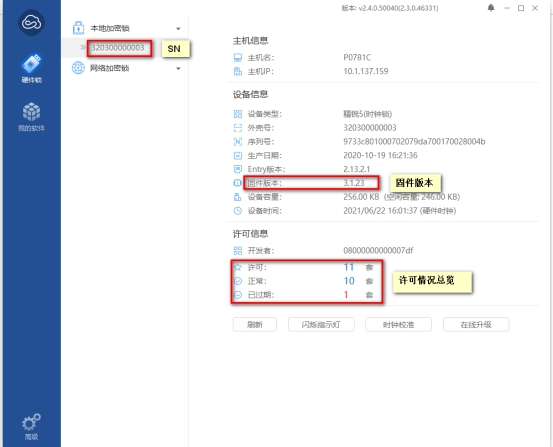
Bước 4: Nhấp vào khu vực chức năng bên trái “我的软件” (Phần mềm của tôi), sau đó nhấn vào góc trên bên phải để xem chi tiết tình trạng cấp phép, như hình dưới,
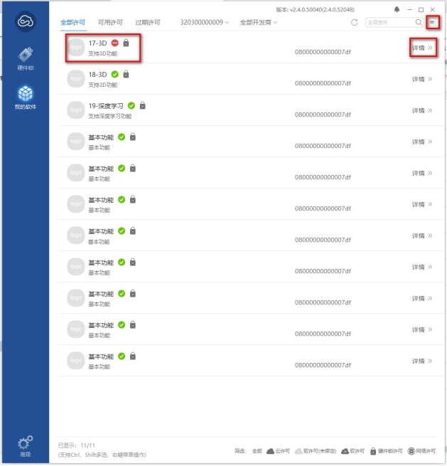
17-3D: Biểu thị mô-đun được cấp phép mang mã quyền 17, mô tả chức năng là “Hỗ trợ chức năng 3D”
: Đã hết hạn
: Còn hiệu lực
Chi tiết: Có thể xem trạng thái cấp phép, thời gian bắt đầu/kết thúc, thời điểm sử dụng lần đầu, thời hạn hiệu lực, số lần sử dụng còn lại, v.v., như hình minh họa bên dưới,
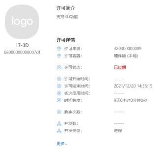
Bạn cũng có thể truy cập mục “高级” (Nâng cao) ở góc dưới bên trái để tra mã lỗi. Danh sách mã lỗi chi tiết xem tại 2.1-3）Danh sách lỗi của USB bảo mật.
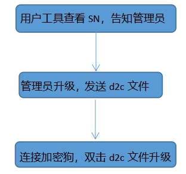
Bước 1: Theo hướng dẫn tại 2.1-1）Công cụ kiểm tra USB bảo mật, tra cứu số SN của USB bảo mật rồi gửi cho quản trị viên
Bước 2: Nhận tệp nâng cấp d2c do quản trị viên cung cấp, sao chép vào máy tính có cắm USB bảo mật cần nâng cấp
Bước 3: Nhấn đúp vào tệp d2c, cửa sổ sau sẽ hiện ra. Nếu xuất hiện thông báo “数据包升级成功！” (Gói dữ liệu nâng cấp thành công!) thì nghĩa là đã nâng cấp thành công. Nhấn “关闭” (Đóng) để thoát
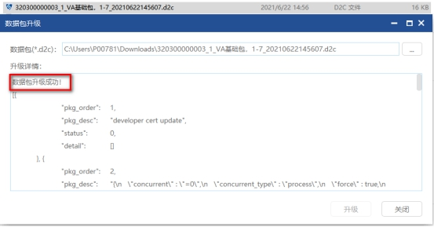
| 错误码 | 描述 | |
|---|---|---|
| 0x00000000 | 0 | Thành công |
| 0x00000002 | 2 | Lỗi tham số đầu vào |
| 0x00000003 | 3 | Không đủ bộ nhớ |
| 0x00000004 | 4 | Kích thước bộ đệm không đủ |
| 0x00000008 | 8 | Handle không hợp lệ |
| 0x00000009 | 9 | Thao tác quá thời gian |
| 0x00000010 | 16 | Thao tác không được hỗ trợ, có thể do phiên bản quá thấp |
| 0x00000040 | 64 | Lỗi mạng |
| 0x00000044 | 68 | Khóa điều khiển hiện tại không hỗ trợ chức năng PIN, vui lòng liên hệ bán hàng hoặc kỹ thuật để thay thế khóa |
| 0x00000045 | 69 | Khóa phát triển vẫn đang dùng PIN mặc định, vui lòng thay đổi PIN |
| 0x00000047 | 71 | Khóa phát triển hoặc API quá thấp, cần thay khóa hoặc nâng cấp SDK |
| 0x00000048 | 72 | Mã PIN nhập sai |
| 0x00000049 | 73 | Mã PIN đã bị khóa, vui lòng liên hệ kỹ thuật |
| 0x01000071 | 16777329 | Gói nâng cấp giấy phép bị hỏng |
| 0x01000072 | 16777330 | Phiên bản gói nâng cấp giấy phép quá thấp |
| 0x02000002 | 33554434 | Lỗi gửi/nhận IPC |
| 0x02000003 | 33554435 | Kết nối thất bại, tức phần mềm không thể kết nối với dịch vụ giấy phép Virbox (dịch vụ cục bộ) |
| 0x05000004 | 83886084 | Không tìm thấy máy chủ |
| 0x05000006 | 83886086 | Số lượng handle giấy phép đăng nhập đã đạt giới hạn (giới hạn là 128) |
| 0x0500000D | 83886093 | Thao tác hệ thống thất bại |
| 0x05000013 | 83886099 | Kích hoạt danh sách trắng |
| 0x05000014 | 83886100 | Kích hoạt danh sách đen |
| 0x0500001F | 83886111 | Không tìm thấy khóa mã hóa, vui lòng đảm bảo khóa được cắm đúng cách |
| 0x13000001 | 318767105 | Chứng chỉ nhà phát triển đã tồn tại trong khóa mã hóa. Nếu giấy phép có thể tải bình thường vào khóa, lỗi này có thể bỏ qua |
| 0x13000003 | 318767107 | Phân tích chứng chỉ thiết bị của khóa người dùng thất bại |
| 0x13000005 | 318767109 | Dữ liệu phản hồi sai |
| 0x13000007 | 318767111 | Chưa gọi hàm khởi tạo Runtime, vui lòng gọi hàm slm_init trước khi gọi API này |
| 0x13000009 | 318767113 | Phiên bản thư viện Runtime không khớp, vui lòng nâng cấp SDK |
| 0x13000020 | 318767136 | Không tìm thấy giấy phép, vui lòng đảm bảo giấy phép được truy cập được (khóa phần cứng cục bộ, khóa phần cứng mạng, giấy phép đám mây, giấy phép mềm) |
| 0x13000021 | 318767137 | Lỗi xác thực. Vui lòng liên hệ kỹ thuật để giải quyết |
| 0x13000022 | 318767138 | Lỗi xác thực. Vui lòng liên hệ kỹ thuật để giải quyết |
| 0x13000024 | 318767140 | Khu vực dữ liệu người dùng quá nhỏ |
| 0x13000025 | 318767141 | Yêu cầu LM không hợp lệ |
| 0x13000027 | 318767143 | Gói nâng cấp D2C sai |
| 0x13000028 | 318767144 | Dữ liệu trả về khi truy cập giấy phép đám mây hoặc nền tảng đám mây sai |
| 0x13000029 | 318767145 | Dữ liệu đọc/ghi quá lớn |
| 0x13000030 | 318767152 | Không có người dùng đăng nhập |
| 0x13000037 | 318767159 | Module giấy phép không tồn tại, dùng mã lỗi này để xác định module chức năng hiện tại có hỗ trợ hay không |
| 0x13000038 | 318767160 | Mật khẩu API nhà phát triển sai |
| 0x1300003A | 318767162 | Phiên đăng nhập tài khoản hết hạn, vui lòng đăng nhập lại |
| 0x13000051 | 318767185 | Giấy phép cần kích hoạt kết nối mạng |
| 0x24000008 | 603979784 | Phát hiện phần mềm bị gỡ lỗi |
| 0x2400000D | 603979789 | Session không hợp lệ (phiên hiện tại của giấy phép đã hết hiệu lực, có thể người dùng đã đăng xuất hoặc bị ép thoát) |
| 0x2400000E | 603979790 | Session đã bị xóa (phiên hiện tại của giấy phép đã hết hiệu lực, có thể người dùng đã đăng xuất hoặc bị ép thoát) |
| 0x2400000F | 603979791 | Giấy phép đã hết hạn (trong quá trình truy cập) |
| 0x24000010 | 603979792 | Session quá thời gian (phiên truy cập khóa mã hóa quá hạn) |
| 0x24000015 | 603979797 | Giấy phép không cho phép đăng nhập từ xa (giấy phép hiện tại là cục bộ nhưng bị truy cập từ máy khác) |
| 0x22000001 | 570425345 | Tên tệp không hợp lệ, có thể tệp chỉ định không tồn tại trong khóa |
| 0x22000006 | 570425350 | Lỗi khi tạo tệp trong khóa, có thể tệp quá lớn, vượt dung lượng còn lại trong khóa |
| 0x22000007 | 570425351 | Lỗi ghi dữ liệu vào tệp trong khóa, có thể không có quyền ghi |
| 0x22000008 | 570425352 | Dữ liệu giấy phép bị lỗi. Có thể dữ liệu bị thay đổi. Vui lòng liên hệ kỹ thuật giải quyết |
| 0x22000009 | 570425353 | Dữ liệu giấy phép bị lỗi. Có thể dữ liệu bị thay đổi. Vui lòng liên hệ kỹ thuật giải quyết |
| 0x2200000B | 570425355 | Khi cập nhật hoặc xóa giấy phép trong khóa, không tìm thấy giấy phép tương ứng |
| 0x2200000D | 570425357 | Số giấy phép hiện tại không thể thao tác, có thể đang thao tác giấy phép số 0 |
| 0x2200000E | 570425358 | Tất cả giấy phép bị vô hiệu (giấy phép số 0 bị vô hiệu) |
| 0x2200000F | 570425359 | Giấy phép hiện tại bị vô hiệu. Nguyên nhân do nâng cấp gói vô hiệu, còn gọi là thu hồi giấy phép |
| 0x22000011 | 570425361 | Giấy phép chưa thể sử dụng, thường là chưa đến thời gian có hiệu lực (với giấy phép có thời gian bắt đầu) |
| 0x22000012 | 570425362 | Giấy phép đã hết hạn (vượt thời gian kết thúc hoặc thời gian sử dụng đã hết) |
| 0x22000014 | 570425364 | Số lần đăng nhập giấy phép đã dùng hết |
| 0x22000015 | 570425365 | Giấy phép đã đạt số lượng truy cập đồng thời tối đa (giấy phép mạng đạt giới hạn, đăng nhập mới sẽ thất bại) |
| 0x22000017 | 570425367 | Khóa đã đạt số lượng phiên tối đa |
| 0x2200001A | 570425370 | Không đủ bộ nhớ chia sẻ. Kích thước bộ nhớ chia sẻ trong khóa là 256 byte, có thể dữ liệu thao tác quá lớn |
| 0x2200001C | 570425372 | Chiều dài tệp dữ liệu sai |
| 0x2200001E | 570425374 | Không tìm thấy tệp dữ liệu giấy phép tương ứng. Có thể giấy phép không có khu vực dữ liệu, nhưng chúng tôi vẫn chuẩn bị thao tác khu vực dữ liệu |
| 0x2200001F | 570425375 | Loại gói nâng cấp từ xa sai |
| 0x22000020 | 570425376 | Gói nâng cấp từ xa có dấu thời gian sai (gói D2C) |
| 0x22000021 | 570425377 | Gói nâng cấp từ xa (D2C) bị sai số sê-ri |
| 0x22000022 | 570425378 | Giấy phép thêm đã tồn tại, nếu muốn ghi đè giấy phép hiện có, hãy chọn “Thêm bắt buộc” khi phát hành giấy phép |
| 0x22000023 | 570425379 | Số lượng giấy phép bị giới hạn |
| 0x22000024 | 570425380 | Dịch chuyển tệp dữ liệu giấy phép không hợp lệ |
| 0x2200002C | 570425388 | Phiên giấy phép đã đăng xuất |
| 0x22000031 | 570425393 | Trường kiểu khu vực dữ liệu người dùng thiết lập sai |
| 0x22000032 | 570425394 | Chiều dài khu vực dữ liệu người dùng thiết lập quá lớn |
| 0x22000034 | 570425396 | Tất cả giấy phép đã hết hạn (giấy phép số 0 đã hết hạn) |
| 0x22000038 | 570425400 | Nâng cấp từ xa thất bại. Lỗi nâng cấp giấy phép, nếu thử nhiều lần vẫn thất bại, vui lòng liên hệ kỹ thuật giải quyết |
| 0x2200003C | 570425404 | Chiều dài dữ liệu mã hóa không đúng |
| 0x2200003D | 570425405 | Dữ liệu mã hóa sai |
| 0x2200003E | 570425406 | Không hỗ trợ nâng cấp mã ngắn |
| 0x22000040 | 570425408 | Khu vực dữ liệu người dùng không tồn tại (giấy phép hiện tại không có dữ liệu) |
| 0x22000050 | 570425424 | Không tìm thấy tệp, có thể tệp chỉ định không tồn tại trong khóa |
| 0x22000059 | 570425433 | ID nhà phát triển không hợp lệ, có thể khóa mã hóa gặp sự cố, vui lòng liên hệ kỹ thuật giải quyết |
| 0x2200005D | 570425437 | Số lượng giấy phép trong gói nâng cấp quá lớn |
| 0x2200005F | 570425439 | Khóa người dùng bị khóa (có thể một số thao tác đã khóa khóa mã hóa, không thể mở, vui lòng liên hệ nhà cung cấp phần mềm giải quyết) |
| 0x22000062 | 570425442 | Tệp tương tác nâng cấp mã ngắn không hợp lệ |
| 0x22000063 | 570425443 | Lỗi khu vực dữ liệu người dùng nâng cấp mã ngắn |
| 0x22000064 | 570425444 | Phiên bản chữ ký khóa phát triển sai, cần thay bằng khóa người dùng mới, vui lòng liên hệ nhà cung cấp phần mềm hoặc kỹ thuật giải quyết |
| 0x22000065 | 570425445 | Dữ liệu chữ ký khóa phát triển sai, cần dùng gói khóa phát triển mới, vui lòng liên hệ kỹ thuật giải quyết |
Để thuận tiện hơn trong việc xác định lỗi khóa bảo vệ, người dùng cần tìm và gửi lại nhật ký của khóa theo cách sau: Hãy gửi thư mục log và tệp install.log trong đường dẫn C:\Program Files (x86)\senseshield\ss
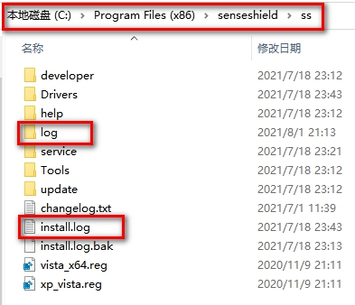
Nếu có thông báo log đang bị chiếm dụng và không thể nén trực tiếp, hãy sao chép thư mục log sang vị trí khác rồi nén và gửi lại.
Bước 1: Truy cập vào thư mục cài đặt VA, mở “加密狗修复工具.exe” với quyền quản trị viên
Bước 2: Tắt phần mềm diệt virus, phần mềm bảo vệ hệ thống,... Nhấn “Một nút kiểm tra & sửa lỗi”, có thể kiểm tra được các lỗi phổ biến sau
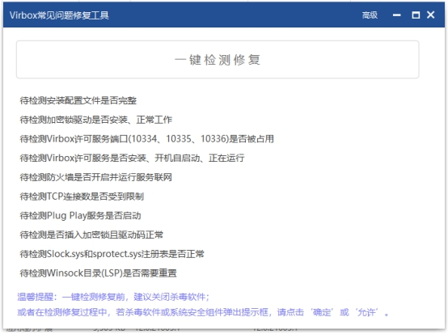
Bước 3: Nếu kết quả kiểm tra như hình dưới thì nghĩa là không có các lỗi dạng này, cần liên hệ bộ phận R&D
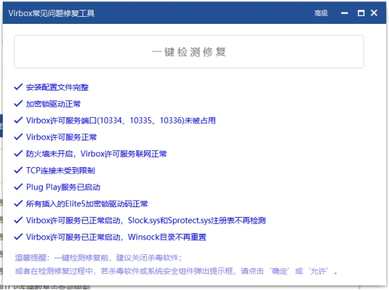
Thông thường, khi cài đặt phần mềm VA, trình điều khiển của khóa bảo vệ sẽ được cài đặt tự động (nếu phiên bản trình điều khiển giống nhau sẽ không cài lại), lúc này là chế độ cài đặt ẩn, người dùng sẽ không thấy và cũng không có biểu tượng ở khay hệ thống (góc dưới bên phải màn hình )。
Nếu khách hàng muốn hiển thị biểu tượng khay hệ thống, hoặc muốn ẩn lại sau khi đã hiển thị, có thể chỉnh sửa tập tin cấu hình để điều chỉnh.
S1: Mở tập tin C:\ProgramData\senseshield\ss\config.ini
S2: Tìm đến mục như hình dưới, chỉnh giá trị theo nhu cầu (1: Ẩn, 0: Hiển thị)
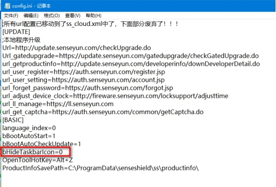
Hiện tượng: Khi mở phần mềm, xuất hiện thông báo lỗi: “Chưa cắm khóa bảo vệ hoặc quyền khóa không đủ, nhấn OK để thoát phần mềm.”
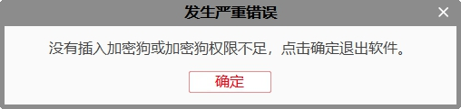
Nguyên nhân và cách xử lý:
Chưa cắm khóa bảo vệ: Cắm khóa vào để giải quyết
Quyền khóa không đủ: Dùng 2.1-1）Công cụ kiểm tra khóa bảo vệ để kiểm tra quyền, nếu thiếu quyền, dùng 2.1-2）Cập nhật khóa từ xa để cập nhật
Chưa cài trình điều khiển khóa phiên bản mới: Dùng 2.1-5）Công cụ sửa lỗi khóa bảo vệ để kiểm tra trình điều khiển có hoạt động bình thường hay không
Hiện tượng: Trong quá trình sử dụng phần mềm, bất ngờ xuất hiện lỗi như sau:
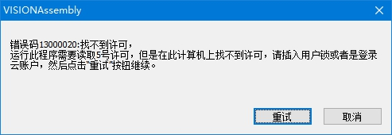
Nguyên nhân và cách xử lý:
Khóa bảo vệ bị ngắt kết nối: Kiểm tra tình trạng kết nối của khóa hoặc dùng 2.1-5）Công cụ sửa lỗi khóa bảo vệ để kiểm tra và sửa lỗi
Một quyền nào đó trên khóa đã hết hạn: Dùng 2.1-1）Công cụ kiểm tra khóa bảo vệ để kiểm tra quyền, nếu đã hết hạn, dùng 2.1-2）Cập nhật khóa từ xa để cập nhật
Hiện tượng: Khi mở phần mềm hoặc đang sử dụng, báo lỗi: “Thời gian sử dụng còn lại: X ngày”
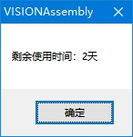
Nguyên nhân và cách xử lý: Phần mềm sẽ nhắc trước khi hết hạn, khi còn dưới 10 ngày sẽ nhắc lúc mở phần mềm, trong quá trình sử dụng bình thường sẽ không nhắc lại cho đến khi sắp hết hạn. Dùng 2.1-2）Cập nhật khóa từ xa để cập nhật
Hiện tượng: Khi cài đặt bộ cài VA, bước cuối cùng sẽ tiến hành cài trình điều khiển khóa bảo vệ (chế độ ẩn). Nếu gặp lỗi khi cài, sẽ hiện thông báo và hủy quá trình cài đặt.
(1) Giá trị trả về: 4：
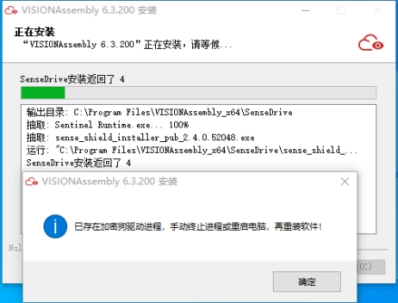
(2) Giá trị trả về: 5：
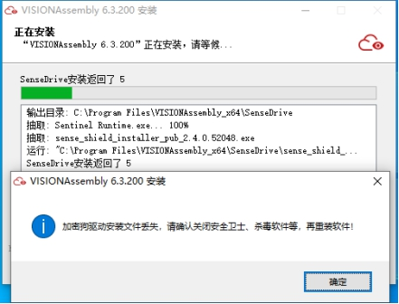
(3) Giá trị trả về: 6：
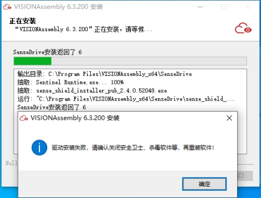
(4) Giá trị trả về: 7：
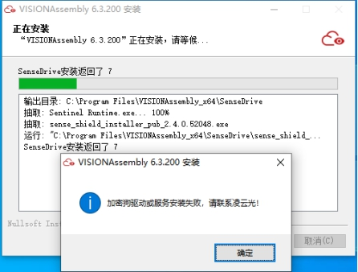
(5) Giá trị trả về: 8：
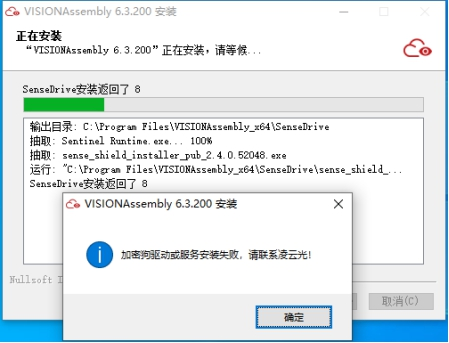
(6) Giá trị trả về: 50：
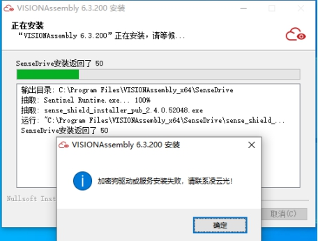
(7) Giá trị trả về: 55：
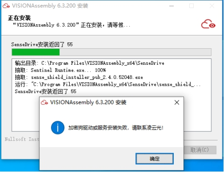
Nguyên nhân và cách xử lý:
(1) Giá trị trả về: 4: Đã có tiến trình cài đặt khóa bảo vệ đang chạy, hãy kết thúc thủ công hoặc khởi động lại máy rồi cài lại phần mềm!
Do nguyên nhân không rõ, quá trình cài đặt trình điều khiển khóa chưa kết thúc bình thường, hãy kết thúc thủ công tiến trình hoặc khởi động lại rồi thử cài lại.
(2) Giá trị trả về: 5: Thiếu tập tin cài đặt trình điều khiển, hãy tắt phần mềm bảo vệ hệ thống, rồi cài lại phần mềm!
Trình điều khiển có thể bị chặn bởi các phần mềm như 360, Tencent PC Manager, 2345, các phần mềm bảo vệ hệ thống khác,... Hãy tắt chúng rồi thử cài lại phần mềm.
(3) Giá trị trả về: 6: Cài đặt trình điều khiển thất bại, hãy tắt phần mềm bảo vệ rồi thử lại!
Nguyên nhân tương tự (2), cần tắt các phần mềm bảo vệ rồi cài lại.
(4) Giá trị trả về: 7\8\50\55: Lỗi cài đặt trình điều khiển hoặc dịch vụ liên quan, vui lòng liên hệ Lingyun!
Hãy thử dùng 2.1-5）Công cụ sửa lỗi khóa bảo vệ để kiểm tra và sửa lỗi, sau đó thử cài lại. Nếu vẫn không được, hãy liên hệ R&D.